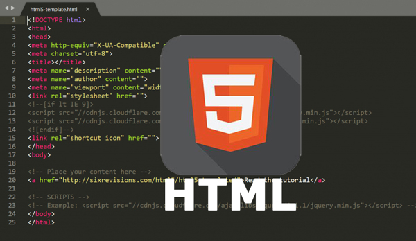
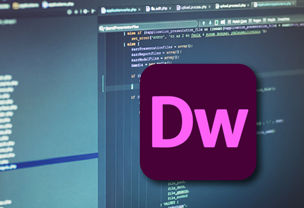
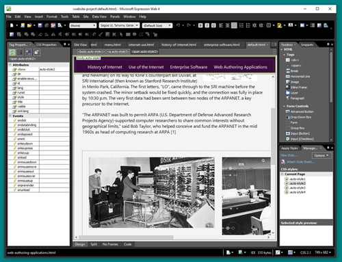
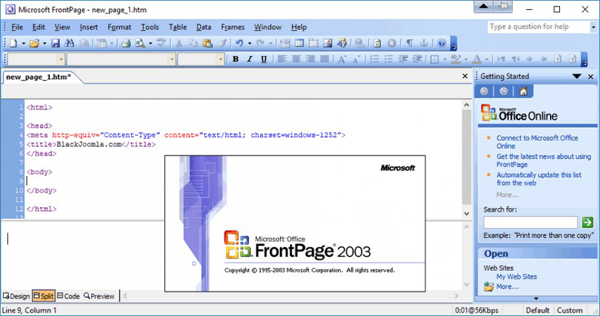
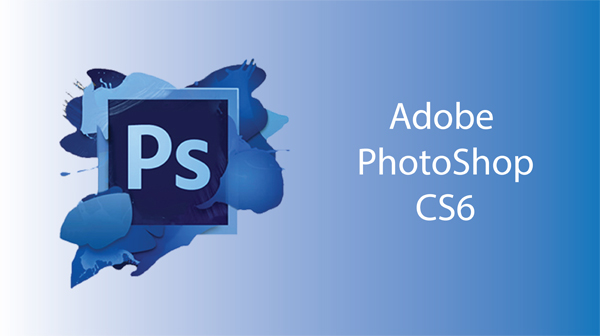

Web authoring is the process of developing Web pages. The Web development process requires you to use software to create functional pages that will work on the Internet. Adding Web functionality is creating specific components within a Web page that do something.
HTML 5HTML (HyperText Markup Language) is the language in which most websites are written. HTML is used to create pages and make them functional.Web browsers receive HTML document and translate the documents into multimedia web pages. |
Adobe DreamweaverDreamweaver is a program that allowes to write (code) and design websites using a visual interface. Dreamweaver supports the most important languages for web design (HTML5, CSS, JavaScript, PHP) and a lot more. |
Microsoft Expression Web 4Microsoft Expression Web is a full-featured professional tool for designing, developing, and publishing compelling, feature-rich sites that conform to web standards. Web designers, web developers, and visual design professionals can use Expression Web to create and produce sites. The multiple preview modes in
Expression Web speed up your site development. Use the Snapshot Preview
to see actual browser views of pages using any browser installed on your
computer, right in Expression Web. Use SuperPreview to compare your
pages in multiple browsers simultaneously. You can even overlay pages
from two different browsers to troubleshoot layout and positioning
errors. [1] [1] Source |
Microsoft FrontPageMicrosoft Office Front Page is WYSIWYG (What You See Is What You Get) HTML editor and website administration tool from Microsoft for the Microsoft WindowsFrontPage was eventually superseded by Microsoft Expressions Web. |
Microsoft PublisherMicrosoft Publisher can be used to create a variety of print media formats. Even though the program is not a primary tool for Web designers, it can still create a simple website in just a few steps and export it to HTML format that Web browsers can read.
|
Adobe PhotoshopAdobe Photoshop is a powerfull graphics editor developed and published in 1988 by Adobe Inc. for Windows and macOS. Since then, the software has become the industry standard in graphics editing. |